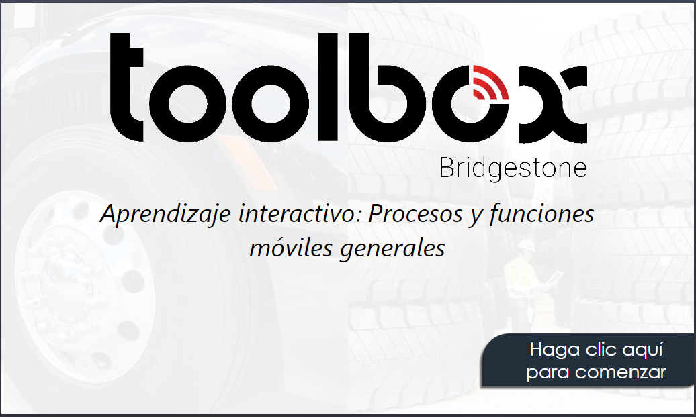
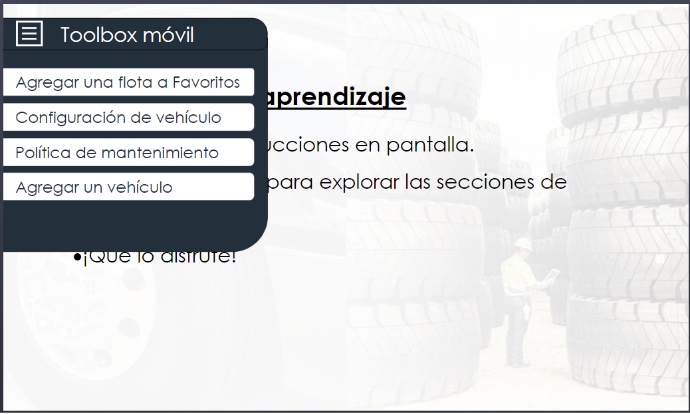
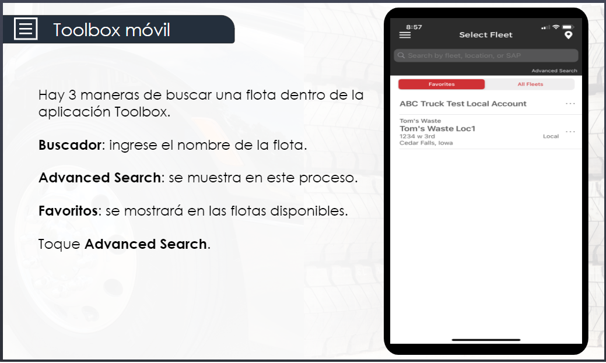

1_2_General Mobile Features and Process
This learning will go through the various processes and tasks that can be performed within the Toolbox Mobile Application. This includes adding vehicles, maintenance policies, fleets, and other tasks.


